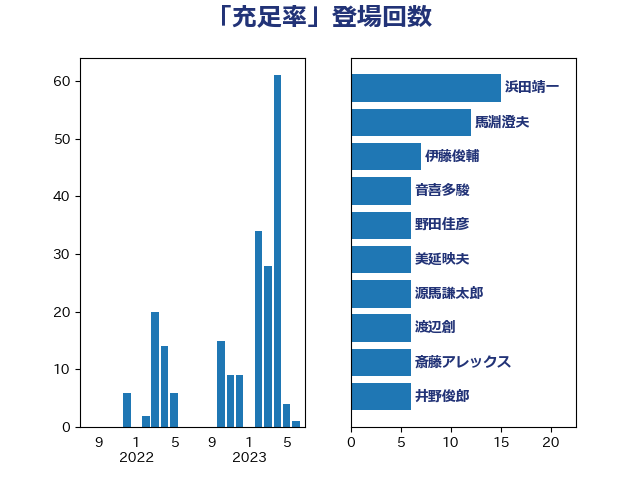

単語「充足率」

| 浜田靖一 | 自由民主党 | 15 回 |
| 馬淵澄夫 | 立憲民主党 | 12 回 |
| 伊藤俊輔 | 立憲民主党 | 7 回 |
| 音喜多駿 | 日本維新の会 | 6 回 |
| 野田佳彦 | 立憲民主党 | 6 回 |
| 美延映夫 | 日本維新の会 | 6 回 |
| 源馬謙太郎 | 立憲民主党 | 6 回 |
| 渡辺創 | 立憲民主党 | 6 回 |
| 斎藤アレックス | 国民民主党 | 6 回 |
| 井野俊郎 | 自由民主党 | 6 回 |
| 湯原俊二 | 立憲民主党 | 5 回 |
| 永岡桂子 | 自由民主党 | 5 回 |
| 上田清司 | 国民民主党 | 4 回 |
| 高木かおり | 日本維新の会 | 3 回 |
| 馬場雄基 | 立憲民主党 | 3 回 |
| 篠原豪 | 立憲民主党 | 3 回 |
| 田野瀬太道 | 無所属 | 3 回 |
| 浜地雅一 | 公明党 | 3 回 |
| 櫻井周 | 立憲民主党 | 3 回 |
| 堤かなめ | 立憲民主党 | 3 回 |
| 吉良よし子 | 日本共産党 | 3 回 |
| 中曽根康隆 | 自由民主党 | 3 回 |
| 河西宏一 | 公明党 | 2 回 |
| 榛葉賀津也 | 国民民主党 | 2 回 |
| 新垣邦男 | 立憲民主党 | 2 回 |
| 後藤茂之 | 自由民主党 | 2 回 |
| 平木大作 | 公明党 | 2 回 |
| 岩谷良平 | 日本維新の会 | 2 回 |
| 倉林明子 | 日本共産党 | 2 回 |
| 住吉寛紀 | 日本維新の会 | 2 回 |
| 中野洋昌 | 公明党 | 2 回 |
| 高橋千鶴子 | 日本共産党 | 1 回 |
| 青山大人 | 立憲民主党 | 1 回 |
| 野村哲郎 | 自由民主党 | 1 回 |
| 進藤金日子 | 自由民主党 | 1 回 |
| 葉梨康弘 | 自由民主党 | 1 回 |
| 臼井正一 | 自由民主党 | 1 回 |
| 牧原秀樹 | 自由民主党 | 1 回 |
| 浅川義治 | 日本維新の会 | 1 回 |
| 浅尾慶一郎 | 自由民主党 | 1 回 |
| 木村次郎 | 自由民主党 | 1 回 |
| 川合孝典 | 国民民主党 | 1 回 |
| 岸田文雄 | 自由民主党 | 1 回 |
| 尾崎正直 | 自由民主党 | 1 回 |
| 小西洋之 | 立憲民主党 | 1 回 |
| 宮本岳志 | 日本共産党 | 1 回 |
| 吉川元 | 立憲民主党 | 1 回 |
| 加藤勝信 | 自由民主党 | 1 回 |
| 佐藤正久 | 自由民主党 | 1 回 |
| 佐々木さやか | 公明党 | 1 回 |
| 中川宏昌 | 公明党 | 1 回 |